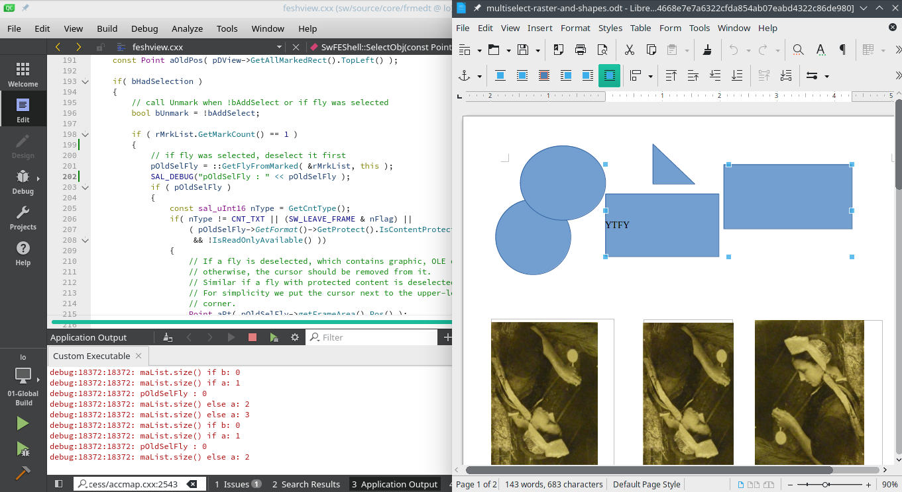
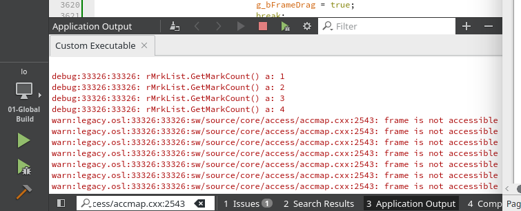

Week #3 - #4 - GSoC Weekly Report - 100 Paper Cuts
GSoC progress for week #3 and week #4.
Group selection does not work with raster images / Writer
Writer can group Drawing objects. For example shapes(rectangles, circles), text boxes and draw images can be grouped together to drag & drop.
However, when copy/paste or drag&drop an image into the writer document canvas, (raster/bitmap)images are handled as Frame objects (holding images/bitmaps), not Drawing objects. Drawing objects have the group feature, but this feature is not implemented for Graphics(Frame objects/bitmap). This is why Writer can’t group raster images.

***
In week #3 and #4, I tried to understand the logic behind the grouping Drawing objects. It seems more complex than it looks. To keep the blog post simple and short, I will share only the key points of my research.
Code pointers:
-
All CLICK and SHIFT+CLICK operations for grouping Drawing objects handled in ./sw/source/uibase/docvw/edtwin.cxx:2770 : https://opengrok.libreoffice.org/xref/core/sw/source/uibase/docvw/edtwin.cxx?r=216a43bc#2770
-
SHIFT+CLICK occurs in: https://opengrok.libreoffice.org/xref/core/sw/source/uibase/docvw/edtwin.cxx?r=216a43bc#3470
-
Select objects : SwFEShell::SelectObj: https://opengrok.libreoffice.org/xref/core/sw/source/core/frmedt/feshview.cxx?r=715797bc#177
-
Marked object list: https://opengrok.libreoffice.org/xref/core/include/svx/svdmark.hxx?r=40595834#230
-
graph.hxx : https://opengrok.libreoffice.org/xref/core/include/vcl/graph.hxx?r=692c5df1#37
-
Types of forms of content: https://opengrok.libreoffice.org/xref/core/sw/inc/editsh.hxx?r=1feb59c3#130
-
Mark object: https://opengrok.libreoffice.org/xref/core/svx/source/svdraw/svdmrkv.cxx?r=8a850eed#1877
Technical Details
SAL_DEBUG( rMrkList.GetMarkDescription() ); output: (in SwFEShell::SelectObj)
For shapes: shapes
For 2+ shapes: 2 shapes
For draw images: Image with transparency
For text box: Text Frame
For raster images: [Drawing object]
Raster images seem to have NONE object name:
#define STR_ObjNameSingulNONE NC_("STR_ObjNameSingulNONE", "Drawing object")rMrkList.GetMarkDescription() can’t classify the raster images?
SAL_DEBUG( rMrkList.GetMarkCount() ); always increases by 1 when selecting drawing objects via SHIFT+CLICK. But always gives 1 when selecting raster images.
All selected objects store in rMrkList list:
const SdrMarkList &rMrkList = pDView->GetMarkedObjectList();This means raster images added to the list but always be unmarked when GetMarkCount reaches 1. The actual reason of unmarking issue is:
// call Unmark when !bAddSelect or if fly was selected
bool bUnmark = !bAddSelect; // bUnmark is 'false' here
if ( rMrkList.GetMarkCount() == 1 )
{
// if fly was selected, deselect it first
pOldSelFly = ::GetFlyFromMarked( &rMrkList, this );
if ( pOldSelFly )
{
/* ... */
bUnmark = true;
}
/* ... */
if ( bUnmark )
{
pDView->UnmarkAll();
if (pOldSelFly)
pOldSelFly->SelectionHasChanged(this);
}With SHIFT+CLICK, pOldSelFly = ::GetFlyFromMarked( &rMrkList, this ); returns 0(null) when selecting the second, third … shape (which is expected); and it doesn’t set bUnmark = true, so it doesn’t execute pDView->UnmarkAll().
However, pOldSelFly = ::GetFlyFromMarked( &rMrkList, this ); always returns an address which is evaluated true in an if ( pOldSelFly ) case. This causes bUnmark = true; and executes if ( bUnmark ). Therefore, when rMrkList.GetMarkCount() == 1 and ::GetFlyFromMarked( &rMrkList, this ) returns an address; rMrkList doesn’t add the second selected raster image to itself and do unmark it.
Frame is not accessible

Another interesting issue is when trying to add(select) a raster image to the shape list (unmarking disabled) debugging warns warn: /*...*/ frame is not accessible.
SwAccessibleMap::InvalidateCursorPosition:
// ...
bool bShapeSelected = false;
// ...
else if( pFESh->IsObjSelected() > 0 )
{
bShapeSelected = true;
aFrameOrObj = static_cast<const SwFrame *>( nullptr );
}
// ...
OSL_ENSURE( bShapeSelected || aFrameOrObj.IsAccessible(GetShell()->IsPreview()),
"frame is not accessible" );pFESh->IsObjSelected() should return GetMarkCount(), not 0. Otherwise bShapeSelected stays false and OSL_ENSURE warns "frame is not accessible".
/sw/source/core/frmedt/feshview.cxx : SwFEShell::IsObjSelected() and SwFEShell::IsFrameSelected():
size_t SwFEShell::IsObjSelected() const
{
if ( IsFrameSelected() || !Imp()->HasDrawView() )
return 0;
return Imp()->GetDrawView()->GetMarkedObjectList().GetMarkCount();
}
bool SwFEShell::IsFrameSelected() const
{
if ( !Imp()->HasDrawView() )
return false;
else
return nullptr != ::GetFlyFromMarked( &Imp()->GetDrawView()->GetMarkedObjectList(),
const_cast<SwFEShell*>(this) );
}When selecting raster images, in SwFEShell::IsFrameSelected():
return nullptr != ::GetFlyFromMarked( &Imp()->GetDrawView()->GetMarkedObjectList(),
const_cast<SwFEShell*>(this) );GetFlyFromMarked should return false (0(null)), not an address which make nullptr != 0x01... true.
***
I also looked at Draw and Calc to see how images are handled. Images are converted a drawing objects and have the same attributes like shapes. But in Writer, images have different attributes and handling.
Summary of last 2 weeks
- Tried to understand how shapes grouped together
- Debugging
Next Week TO-DO
- Make raster images selectable(group) with SHIFT+CLICK